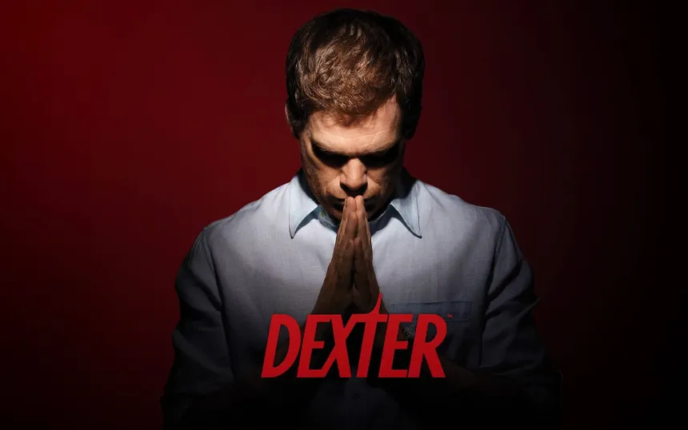
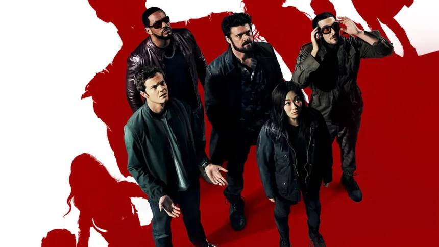
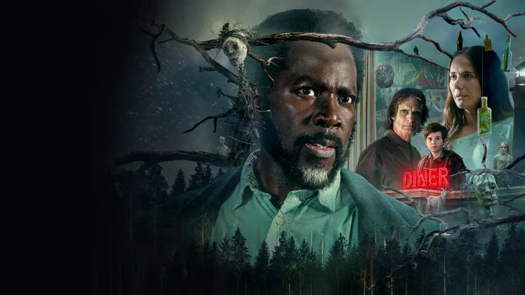

Ever since I watched one of my first TV series, Dexter
I've always loved the way these shows tell their stories. Here are my top three, ranked.
The Top 3
-
Dexter

The show that started it all for me — a blood-spatter analyst by day, vigilante by night.
-
The Boys

A darkly satirical take on superheroes — equal parts brutal, funny, and clever.
-
From

An eerie mystery about a town that traps everyone who enters — still catching up on this one.